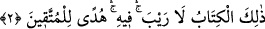
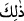

KENDİSİNDE
ŞÜPHE OLMAYAN KİTAP
2. “Kendisinde hiçbir şüphe olmayan o kitap, müttakîler için hidâyet kaynağıdır.”
Kitap’tan kasdedilen mânâ, daha önceki kitaplarda gönderileceği va’d edilen kitâb-ı
kâmildir. Burada uzak olmayan bir şeye “zâlike” (__WORD__) ile işâret edilmesinin sebebi
şudur: Bu kitâb daha önceden gönderileceği va’d edilmiş olması açısından uzak
hükmündedir.
Rivâyete göre Allah Teâlâ Tevrât’ı indirdiğinde –ki Tevrât bin sûredir– Mûsâ (a.s.)
şöyle münâcâtta bulunmuştu:
– “Ya Rabbi! Bu kitabı okuyup ezberlemeye kim güç yetirebilir?”
Allah Teâlâ:
– “Ben bu kitaptan daha büyüğünü ileride inzâl edeceğim.” buyurdu.
– “Kime indireceksin yâ Rabbi?” diye sordu.
– “Peygamberlerin sonuncusuna indireceğim.” buyurdu.
– “Son peygamberin ümmetinin ömürleri çok kısa olacak, acabâ onlar bu kitabı nasıl
öğrenip okuyacaklar?” diye sordu.
– “Ben onlara bu işi kolaylaştıracağım. Hatta onların çocukları bile onu öğrenip
okuyacaklar.” diye cevap verdi.
– “Bunu nasıl yapacaksın yâ Rabbi?” şeklindeki bir soruya:
– “Ben semâdan yeryüzüne yüz sahîfe ve üç kitap gönderdim. Elli suhuf Şît (a.s.)’a,
otuz suhuf İdrîs (a.s.)’a, yirmi suhuf İbrâhîm (a.s.)’a, Tevrât sana, Zebûr Dâvud (a.s.)’a
gönderildi. İncil ise Îsâ (a.s)’a gönderilecek. Bu kitaplarda kâinâtı zikrettim. Bunların
hepsindeki mânâyı Muhammed (a.s.)’a indireceğim kitapta zikredeceğim. Bunların
tamâmını yüzondört sûrede toplayacağım. Bunların hepsinin mânâsı Fâtiha’nın yedi
âyeti içinde olacak. O da yedi harf olan besmele içinde olacak. Ondaki mânânın tamâmı
da “Elif-Lâm-Mîm”in “Elif”inde olacak. Sonra “Bakara” sûresi “Elif-Lâm-Mîm” ile
başlayacak.”
Allah Teâlâ bunu Tevrât’ta va’d etti ve bu va’di gereği Hz. Muhammed’e Kur’ân’ı
indirdi. Ancak Yahûdîler bu kitabın, Hz. Mûsa’ya söylenen kitap olduğunu inkâr ettiler.
Bunun için Allah Teâlâ: “O Kitap...” buyurdu.
“Rayb” nefsin kararsız ve sallantıda olması demektir. Buna “şekk” adı verilmiştir.
Çünkü şekk ile nefs itmînâna eremez ve kararsız bir halde bulunur. Hadîste “Sana
şüphe veren şeyi bırak, şüphe vermeyene bak.”[176] buyurulmuştur. Şekk, tereddüd, sıdk
ise itmînândır. et-Teysîr adlı tefsirde belirtildiğine göre “Rayb” içinde korku bulunan